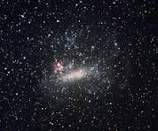

guia das galáxias

Galáxia da Grande Nuvem de Magalhães
Descrição
A Grande Nuvem de Magalhães (comumente abreviada como LMC, do inglês Large Magellanic Cloud) é uma galáxia anã satélite que orbita em torno da Via Láctea.
- é rica em gases e poeira.
- Foi batizada por Fernão de Magalhães.
- A Grande Nuvem de Magalhães é uma das galáxias mais proximas da Via Láctea
Outras galáxias:
Andromeda
Olho Negro